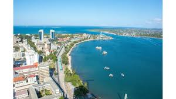

Join us for a unique about white water rafting in Tanzania
There are actually studies on white water rafting, and on activities in the outdoors, which show that not only are these things fun, there are thousands of health benefits as well. When people are getting tired of their jobs or just tired in general, one way they can reduce their stress is by going outdoors. Now, studies show that being outdoors in fresh air is far more beneficial to your mental health and stress levels than any indoor activities.
Nearly every company in the world requires their employees to work as a team. That said, going on a wild river adventure with your teammates is perfect for building deeper and more fulfilling relationships with them. In regards to family bonding, it gives you a chance to learn more about their strengths and weaknesses, which helps each member of the family to bond.
